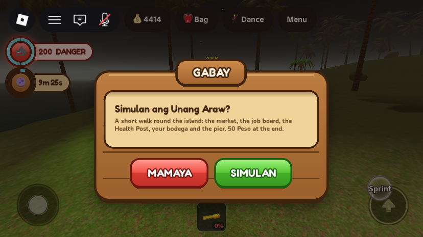
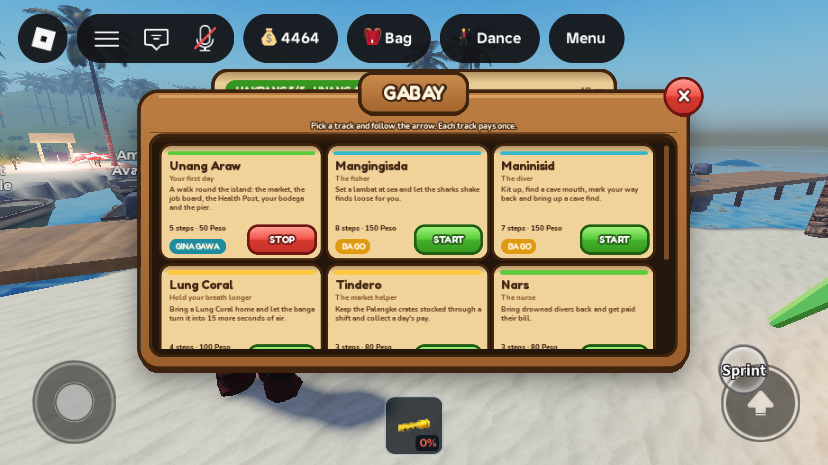
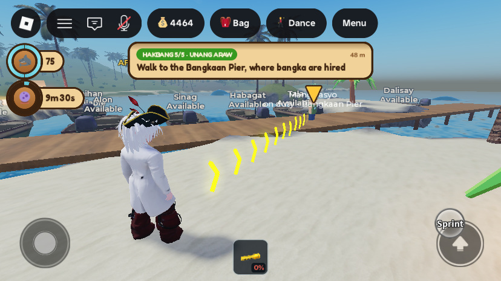
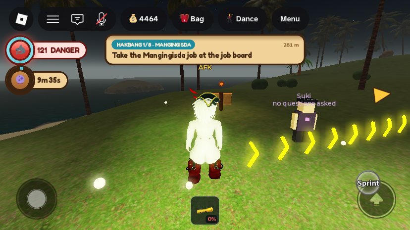
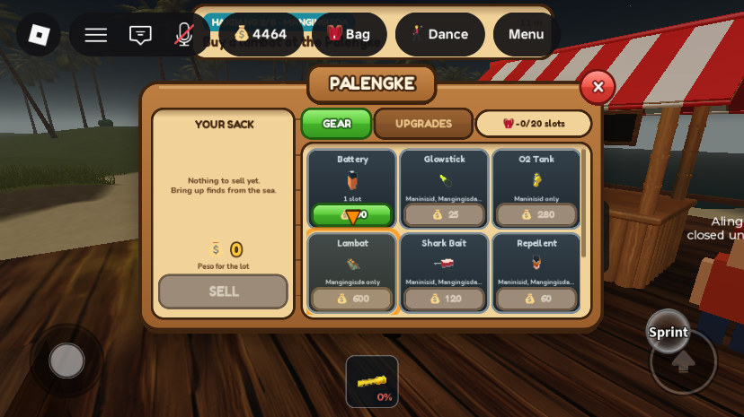
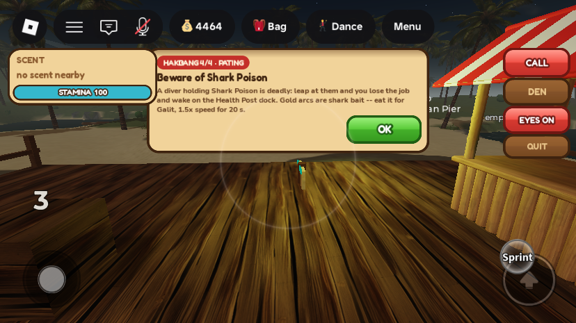

Phase 8: the Gabay tutorial
Not live yet. Like Phases 1 to 7, this reaches players only when the place is published from Studio.
What was asked
- Tutorial cards with a description and a button, covering everything you can do on the island. Starting one walks you through it step by step with an arrow (for example the Mangingisda track). Each finished track pays a reward, and there is also a track on how to be a bad player.
- Roadmap detail: a Gabay panel replacing the static help panel; guidance in the world and on the UI (an arrow at the screen edge, a pulsing button, a step card like "Hakbang 3/8 · 42 m"); steps verified on the server; each track pays once per account; first join offers "Simulan ang Unang Araw?"
- During the work the owner sent a reference picture of the guide arrow they expected: a row of glowing chevrons along the ground from the player to the target. My first version had a single beam, which I replaced with that chevron trail.
What changed
1. The first-join offer and the GABAY panel


- The old static "Mabuhay! Welcome" panel is retired, and the menu's "Help" entry now opens GABAY. The top bar itself is untouched.
- The panel is built with the same kit (
ReplicatedStorage.UIKit) as the Bag, Palengke and dialogs, so it matches every other panel. That kit is built from native instances, not uploaded images, like all the panels since the 29 Sep redesign. - One track is active at a time. Starting another replaces it, STOP drops it, and a finished track can be replayed (ULIT) without paying again.
2. Guidance: the step card, the chevron trail, the edge arrow and the button pulse



- The step card sits under the top bar, between the status column and the shark buttons. It reads "HAKBANG 2/8 · MANGINGISDA", the instruction, the distance, and progress where it applies ("(1/2)", "(2/3)"). Tapping it opens GABAY. When a track ends it shows "TAPOS! … +N Peso".
- The chevron trail: 13 pairs of neon arms that follow the ground (level with you in the water), drifting at 5 studs a second, up to 42 studs ahead. It fades in by your feet and out at the far end. It is built from parts, so no image had to be uploaded.
- The marker is a bouncing ▼ with the place's name and distance, always on top and visible from any distance.
- The edge arrow is a ▶ turned toward the target when it's off-screen. The kit's font has no "➤", so the first version drew nothing until it was switched to ▶. For a target behind you it points left or right at mid-height.
- The button pulse: an orange ring, a pulsing fill and a bouncing pointer on the button to tap. A plain gold ring was tried first and was lost against the cream Palengke.
- Dynamic targets: "cave" is the nearest of the six cave mouths, "coral" the nearest Lung Coral, and "bodega" your own chest. All other places are fixed map positions, because with streaming a far place may not exist on the client.
3. Info steps

The tracks
| Track | Steps (how each is checked) | Reward |
|---|---|---|
| Unang Araw (first day) | Palengke (visit) → job board (visit) → Health Post (visit) → put your bodega down (BodegaUp) → Bangkaan Pier (visit) | 50 |
| Mangingisda | take the job (Role) → buy a lambat (spend:Item_lambat) → hire a bangka (spend:BoatRental) → sail past 550 studs, in the boat → plant the 4 stakes (lambat_set) → a shark through your net (lambat_catch) → pick up a catch (lambat_pickup) → sell at the Palengke (earn:LootSold) | 150 |
| Maninisid | take the job → buy a glowstick and a battery → reach a cave mouth → drop a glowstick (glowstick_drop) → a find taken below y −25 (cave_find) → back above y −1.5 → sell | 150 |
| Lung Coral | take a coral (coral_pickup) → reach your bodega (AtBodega) → into the banga (coral_banga) → info: the hourglass badge (pulsed) | 100 |
| Tindero | take the job → restock 3 times (quest:VendorRestock) → closing pay (earn:MarketShift) | 80 |
| Nars | take the job → go to the Health Post → get paid for a revive (earn:NurseWork) | 80 |
| Pulis | take the job → patrol to Bantay Tanaw (visit) → seize a tolda (earn:Confiscation) → make an arrest (arrest) | 100 |
| Pating | take the job → swim more than 70 studs out of the den → leap (pating_leap) → info: Shark Poison and bait | 80 |
| Pasaway (the bad side) | buy a tolda from Suki (spend:Item_tolda) → pitch it (tolda_pitch) → put something up for sale (tolda_list) → take the axe to someone's bodega (bodega_swing) → info: stars, ronda and the Piitan | 100 |
Changed from the plan:
- The Pating's "follow the sense ring" became "swim out of the den" (the sense ring needs another player to smell).
- Pasaway's "sell a find" became "put something up for sale", and "break a bodega" became "take your axe to someone's bodega" (a counted swing). A sale or a finished break-in needs another player to go along with it.
- The Nars track's "answer a call" and "play the rhythm" are one step: being paid for a revive.
All changes
| Instance | Change | |
|---|---|---|
ReplicatedStorage.TutorialTracks | new | ModuleScript: places (fixed positions, the six cave mouths, the three corals), Nearest, the track order and the nine tracks with their steps. |
ServerScriptService.TutorialService | new | Script: progress on profile.Tutorial (offered, done, active, step, count, got). A 0.5 s tick checks visit, role and check steps. It listens to CurrencyService.Observers, QuestService.OnReport and ServerStorage.TutorialEvent, advances steps, and pays each track once (AddShells, source "Tutorial"). It sends the first-join offer. Studio-only hook ServerStorage.DebugTutorial: "reset", "restore", tbl, "note", key, "step", n, "trace", bool, "dump". |
ServerStorage.TutorialEvent | new | BindableEvent (made by TutorialService) that services fire with (player, key). |
ReplicatedStorage.Remotes.TutorialState, RequestTutorial | new | RemoteEvents. The server sends progress (plus offer, started, advanced, finished, reward); the client sends "start", key, "stop", "ack" (info steps only) or "sync". |
StarterPlayer.StarterPlayerScripts.TutorialController | rewrite | The GABAY panel (registered as PanelUtil "help"), the step card, the chevron trail, the target marker, the edge arrow, the button pulse and the first-join offer. It builds PlayerGui.GabayGui, GabayStep, GabayArrow and a client-only workspace.GabayGuide. |
ServerScriptService.CurrencyService | edit | New CurrencyService.Observers, told (player, signedAmount, source) after every AddShells and TrySpend, each in its own thread so a listener can never break a payment. |
ServerScriptService.QuestService | edit | New QuestService.OnReport, told about every report. |
LambatService, InventoryService, LungCoralService, BlackMarketService, PoliceService, SharkPlayerService, BodegaService (all in ServerScriptService) | edit | One TutorialEvent:Fire at the moment each fact happens: lambat_set, lambat_catch, lambat_pickup; glowstick_drop; coral_pickup, coral_banga; tolda_pitch, tolda_list; arrest; pating_leap; bodega_swing. Nothing else in these services changed. |
ServerStorage._Retired.StarterGui__TutorialGui_preGabay, StarterPlayer_StarterPlayerScripts__TutorialController_preGabay | retired | The old welcome panel, and a disabled copy of the old controller. |
Every edited script was compile-checked with loadstring. MobileUIController still lists TutorialGui in its targets; with that gone it simply finds nothing, which is harmless.
Testing
Five short playtests on MERS_Cov2 (display name DARKxGRey), each ended by kicking the player from the Server; Studio was then stopped from Play mode with nobody in it. There were no script errors.
- The offer appeared on join ("Simulan ang Unang Araw?"), and the server marked it offered.
- Unang Araw end to end, on server checks: Palengke, job board and Health Post by teleporting to each; the bodega step by really placing the Kahon/Bakal; the pier by walking onto it. It ended "TAPOS! Unang Araw done. +50 Peso". The balance went 4,414 → 4,464. The trace showed the reward as an
earn:Tutorialfact, which proves theCurrencyServicehook. - Pating, with the track pre-marked done: taking the job (free Studio hook), swimming out of the den, and the real leap each advanced a step. The info step's OK then gave "Pating done again." with no payment.
- An "all" step: faked glowstick and battery purchases showed "(1/2)" and then advanced. A stray client OK on that step did nothing.
- Guidance: 13 chevrons drawn toward the pier, the edge arrow on a target behind the camera, and the Lambat tile pulsing with the Palengke open. Screenshots above.
- Fixed while testing:
- The single beam was replaced with the chevron trail from the owner's picture. It was then made bigger and deeper gold, because the pale marks washed out on sand.
- The edge arrow's "➤" is missing from Fredoka, so it became ▶, kept at mid-height and away from the touch controls.
- The button ring was too faint and got stronger.
- The step card once sat under the top bar (its height wasn't known yet) and now follows the top bar.
- Put back: the account's Gabay progress was reset to empty (it had none before), so it will get the offer again. The 50 Peso Unang Araw reward stays on the test account.
Gaps and things to check
- Most purchase and money steps were faked in testing (buying a lambat, glowstick, battery or tolda, a bangka hire, selling, shift and nurse pay, a seizure). A test purchase would put real Peso into the Community Fund's cross-server lifetime total. They all come through the
CurrencyServicehook, which the reward proved, by source names read from the services. - Needs other players: the Pulis steps (a seizure and an arrest), the Nars bill, Pasaway's axe step, and a lambat catch (an AI shark has to swim through).
- Not played through: Mangingisda, Maninisid, Lung Coral and Tindero. Their facts come from the hooks above, and the
quest:path (VendorRestock, SeaHarvest) was not seen firing. - Lung Coral can't be done by a player whose lungs are already full (3 corals), because the coral refuses them. The card doesn't say so yet.
- Tapping the cards and buttons (START, OK, SIMULAN) wasn't pressed by hand; Studio's touch emulation can't press them. The same remotes were sent instead.
- Straight lines: the chevron trail runs straight at the target, over hills and through walls.
- Pulse pointer clipping: a button in the top row of a scrolling grid may have its pointer clipped.
- No quick-test values were added.